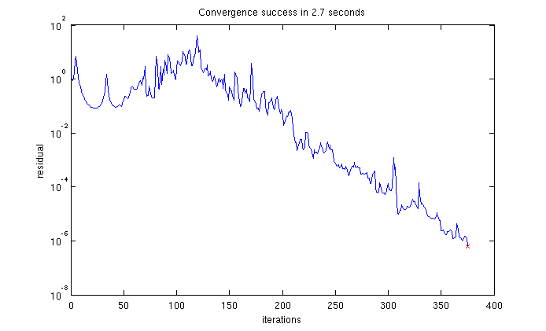

Maxwell Documentation
Welcome to the official documentation for Maxwell! If something seems to be missing, just use http://ask.lightlabs.co.
Contents
Hello! from the creators of Maxwell.
Hi, we're Jesse and Wonseok, co-founders at Lightlabs.co and the guys behind Maxwell. We built Maxwell to turbo-charge our research as PhD students at Stanford, and we hope it boosts whatever your working on as well!
We continue to work hard on making Maxwell the most powerful and enjoyable tool in your computational toolbox, and so if you ever have any questions, or if there's ever anything you need help with regarding Maxwell, please bring it up on ask.lightlabs.co, which is forwarded to our inboxes.
Thank you for taking the time to get to know Maxwell!
A quick taste of Maxwell
Okay, let's cut straight to the chase and give you a little taste of Maxwell right off the bat.
First, here's an overview of what a (short) Maxwell session might look like.
eval(urlread('http://m.lightlabs.co/pre-release')) % Load Maxwell. % Get your Amazon Web Services (AWS) Credentials ready. maxwell.aws_credentials('access-key-id', 'secret-access-key'); % Launch a Maxwell cluster on Amazon's Elastic Compute Cloud (EC2) service. maxwell.launch('cluster1', 4); % A 4-node cluster. % Solve an electromagnetic simulation on the cluster. maxwell.solve('cluster1', 4, {simulation_parameters});% Use all 4-nodes. % Terminate the Maxwell cluster. maxwell.terminate('cluster1');
Quick-start
Now that you have an idea of how Maxwell is used, why don't we guide you through an actual simulation on your Matlab session, so you can see how things look live?
Just to make sure we're on the same page, you probably already have Maxwell loaded, but if you doubtful, running the following never hurts:
eval(urlread('http://m.lightlabs.co/pre-release')) % One-command load.
First off, you'll need your AWS Access Credentials, which you can obtain at https://portal.aws.amazon.com/gp/aws/securityCredentials#access_credentials. In particular, you're looking for an active Access Key ID and it's corresponding Secret Access Key. Of course, if you don't have an AWS account you'll need to sign up for one first.
Once you have your eye on your AWS credentials, then you'll want to copy-and-paste them into Maxwell's aws_credentials function like so:
maxwell.aws_credentials('access-key-id', 'secret-access-key');Take the following as an example:
maxwell.aws_credentials('AKIAJLYFDI6ZYE6WKU', '0Mi2d8MT9Uo8+P0VVmOVV2XdbOxv5UarS2rSaI');
Believe it or not, that's the only adminstrative task that we make you do. So with that our of the way, let's get on with the fun stuff, like actually launching a cluster!
To launch a cluster, just choose a name for it, and the number of computational nodes you want it to have. Having a cluster name allows you to juggle multiple clusters (when you want to get fancy), and, as expected, the more worker nodes a cluster has, the more computational power is at its disposal.
For our purposes, let's call our cluster 'cluster1', and boot it up with 2 worker nodes.
% This is how we launch clusters on Amazon EC2. Takes about 5 minutes. maxwell.launch('cluster1', 2); % Yes, that's it. Really.
Cluster launches on EC2 take about 5 minutes, so while you're waiting let us tell you more about what the cluster actually consists of.
Each cluster consists of one master node, and as many worker nodes as you want (or Amazon will let you have). Specifically, each worker node contains two Nvidia GPUs and, in EC2 lingo, are cg1.4xlarge spot request instances. Maxwell actually uses these GPUs to accelerate our solver, more on that in a later section though.
While the cluster is still booting up, please visit https://console.aws.amazon.com/ec2/home?region=us-east-1#s=Instances where you can manually monitor the launch process (also try clicking on "Spot Requests" on the left sidebar).
When the launch is successfully completed, you are ready (after only two lines of Matlab mind you!) to start solving electromagnetic simulations! We'll show you how to do this in two ways, first using the synchronous solve function and then using its asynchronous sibling.
Now, just so you know, we won't cover the nitty-gritty of how we describe electromagnetic simulations until a later section; instead, we'll use the example_simulation_parameters function that comes with your Maxwell toolbox to generate them for us.
So, without further ado, let's solve an electromagnetic simulation!
params = example_simulation_parameters([60 60 60]); % Let's start small (60x60x60 cells). [E, H] = maxwell.solve('cluster1', 1, params{:}); % Go baby, go! Notice that we only use 1 node.
You should get a plot similar to the one below.

And upon inspecting the solution using
imagesc(real(E{3}(:,:,30)')); axis equal tight;
you should obtain the (near-field) radiation pattern of a dipole.
Now that you're getting the hang of simulating, why not try something bigger?
params = example_simulation_parameters([300 300 60]); % Over 5 million cells. [E, H] = maxwell.solve('cluster1', 1, params{:}); % Solve using 1 node. [E, H] = maxwell.solve('cluster1', 2, params{:}); % Now solve using 2 nodes (faster!).
So what's going on now? Well, besides simulating a larger space, we're comparing using either 1 or 2 nodes of the cluster (which has a total of 2 nodes) to solve the simulation. Naturally, the simulation which uses 2 nodes should run faster, although not nearly twice as fast (there is some communication cost which cannot be hidden).
At this point, you may be wondering why anyone would not use all the worker nodes available for each simulation. Great question! To answer it, let me introduce you to Maxwell's asynchronous solve capabilities.
The maxwell.solve_async function accepts the same input parameters as maxwell.solve, but instead of blocking until the simulation is completed, a callback function is returned. This callback function should then be repeatedly called in order to get updates on the progress of the simulation, and to download the result once the simulation is completed.
This is illustrated with the simple example below:
params = example_simulation_parameters([300 300 60]); sim_finish = maxwell.solve_async('cluster1', 1, params{:}); % Asynchronous solve! while ~sim_finish(); end % Loop until sim_finish() returns true, signalling simulation completion. [is_done, E, H] = sim_finish(); % Download the solution fields.
Take a look at this next example, which utilizes our 2-node cluster to simulate 2 simulations in parallel (1 node each):
params = example_simulation_parameters([300 300 60]); subplot 121; sim1 = maxwell.solve_async('cluster1', 1, params{:}); % Send a simulation to cluster1, subplot 122; sim2 = maxwell.solve_async('cluster1', 1, params{:}); % and immediately send another, before the first even completes. while ~all([sim1(), sim2()]); end % Monitor simulations until completed. % Get our results. [sim1_finished, E, H] = sim1(); [sim2_finished, E, H] = sim2();
Structure
Explain how Maxwell is laid out.